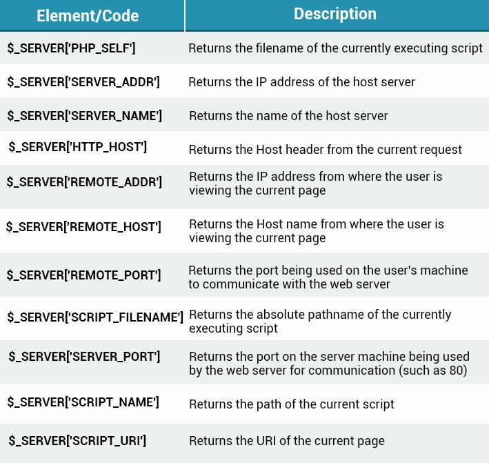

-->When you define a function, the variables that represent the values that will be passed to it for processing are called parameters. However, when you use a function, the value you pass to it is called an argument.
-------------------------------------------------------- Default Arguments
-->When using default arguments, any defaults should be on the right side of any non-default arguments; otherwise, things will not work as expected. -------------------------------------------------------- Return
-->Leaving out the return results in a NULL value being returned
-->A function cannot return multiple values, but returning an array will produce similar results
-------------------------------------------------------- Funciton
-->Function names are NOT case-sensitive.
-->When you define a function, the variables that represent the values that will be passed to it for processing are called parameters. However, when you use a function, the value you pass to it is called an argument.
------------------------------------------------------ Default Arguments
-->When using default arguments, any defaults should be on the right side of any non-default arguments; otherwise, things will not work as expected. ------------------------------------------------------- Return
-->Leaving out the return results in a NULL value being returned
-->A function cannot return multiple values, but returning an array will produce similar results
-------------------------------------------------------- Predefined Variables
-->A superglobal is a predefined variable that is always accessible, regardless of scope. You can access the PHP superglobals through any function, class, or file
<?php
echo $_SERVER['HTTP_HOST'];
//Outputs "localhost"
?>
---------------------------------------------------------
-->his method can be useful when you have a lot of images on your server and need to transfer the website to another host. Instead of changing the path for each image, you can do the following:
Create a config.php file, that holds the path to your images:
-->The path to your images is now dynamic. It will change automatically, based on the Host header.

-->$_SERVER variable is an array
----------------------------------------------------------------- Forms
-->The purpose of the PHP superglobals $_GET and $_POST is to collect data that has been entered into a form. <form action="first.php" method="post">
<p>Name: <input type="text" name="name" /></p>
<p>Age: <input type="text" name="age" /></p>
<p><input type="submit" name="submit" value="Submit" /></p>
</form>
-->The action attribute specifies that when the form is submitted, the data is sent to a PHP file named first.php -->HTML form elements have names, which will be used when accessing the data with PHP
-----------------------------------------------------------------
-->Now, when we have an HTML form with the action attribute set to our PHP file, we can access the posted form data using the $_POST associative array
-->The $_POST superglobal array holds key/value pairs. In the pairs, keys are the names of the form controls and values are the input data entered by the user
---------------------------------------------------------------- POST
-->The two methods for submitting forms are GET and POST -->Information sent from a form via the POST method is invisible to others, since all names and/or values are embedded within the body of the HTTP request. Also, there are no limits on the amount of information to be sent. -->Moreover, POST supports advanced functionality such as support for multi-part binary input while uploading files to the server. -->However, it is not possible to bookmark the page, as the submitted values are not visible.
-->POST is the preferred method for sending form data. ----------------------------------------------------------------- GET
Information sent via a form using the GET method is visible to everyone.(all variable names and values are displayed in the URL). GET also sets limits on the amount of information that can be sent - about 2000 characters. However, because the variables are displayed in the URL, it is possible to bookmark the page, which can be useful in some situations.
Note: Bookmarking
is when the browser remember the URL of a page. GETs can be
bookmarked
because the data needed for the
request
is stored in the URL and hence the
bookmark
. POSTS cannot because the data is stored in the
request
body which is not stored as part of the
bookmark
.
--->GET should NEVER be used for sending passwords or other sensitive information when using POST or GET, proper validation of form data through filtering and processing is vitally important to protect your form from hackers and exploits! ---------------------------------------------------------------- Sessions
-->Using a session, you can store information in variables, to be used across multiple pages. information is not stored on the user's computer, as it is with cookies. by default, session variables last until the user closes the browser
Start a PHP Session
-->A session is started using the session_start() function. Use the PHP global $_SESSION to set session variables
-->Now, the color and name session variables are accessible on multiple pages, throughout the entire session.
-->The session_start() function must be the very first thing in your document. Before any HTML tags
-->Another page can be created that can access the session variables we set in the previous page:
<?php
//Start the session
session_start();
?>
<!DOCTYPE html>
<html>
<body>
<?php
echo "Your name is ". $_SESSION['name']; // Outputs "Your name is John"
?>
</body>
</html>
-->Your session variables remain available in the $_SESSION superglobal until you close your session.
-->All global session variables can be removed manually by using session_unset(). you can also destory the session with session_destory() ----------------------------------------------------------------- Cookies
Cookies are often used to identify the user. A cookie is a small file that the server embeds on the user's computer. Each time the same computer requests a page through a browser, it will send the cookie too. with PHP, you can both create and retrieve cookie values
expire: Specifies (in seconds) when the cookie is to expire. The value: time()+86400*30, will set the cookie to expire in 30 days. if this parameter is omitted or set to 0, the cookie will expire at the end of the session(when the browser closes). Default is 0
path: Specifies the server path of the cookie. if set to "/", the cookie will be available within the entire domain. if set to "/php/", the cookie will only be available within the php directory and all sub-directories of php. The default value is the current directory in which the cookie is being set.
domain: Specifies the cookie's domain name. To make the cookie available on all subdomains of example.com, set the domain to "example.com".
secure: Specifies whether or not the cookie should only be transmitted over a secure, HTTPS connection. TRUE indicates that the cookie will only be set if a secure connection exists. Default is FALSE
httponly: if set to TRUE, the cookie will be accessible only through the HTTP protocol(the cookie will not be accessible to scripting languages). Using httponly helps reduce identity theft using XSS attacks. Default is FALSE
-->The name parameter is the only one that's required. All of the other parameters are optional
---------------------------------------------------------- Cookies
The following example creates a cookie named "user" with the value "John". The cookie will expire after 30 days, which is written as 86400*30 in which 86400 = one day. The '/' means that the cookie is available throughout the entire website
-->We then retrieve the value of the cookie "user"(using the global variable $_COOKIE). we also use the isset() function to find out if the cookie is set:
if(isset($_COOKIE['user'])){
echo "Value is: ". $_COOKIE['user'];
}
//Outputs "Value is: John"
?>
-->The setcookie() function must appear BEFORE the <html> tag. The value of the cookie is automatically encoded when the cookie is sent, and is automatically decoded when it's received. Nevertheless, NEVER store sensitive information in cookies.
---------------------------------------------------------- Manipulating Files
PHP offers a number of functions to use when creating, reading, uploading, and editing files. The fopen() function creates or opens a file. if you use fopen() with a file that doesn't exist, file will be created, given that the file has been opened for writing(w) or appending(a)
-->Use one of the following modes to open the file:
r: Opens file for read only w: Opens file for write only. Erases the contents of the file or creates a new file if it doesn't exist. a: Opens file for write only. x: Creates new file for write only r+: Opens file for read/write w+: Opens file for read/write. Erases the contents of the file or creates a new file if it doesn't exist a+: Opens file for read/write. Creates a new file if the file doesn't exist x+: Creates new file for read/write
-->The example below creates a new file, "file.txt", which will be created in the same directory that houses the PHP code.
$myfile = fopen("file.txt", "w");
Summary: PHP offers a number of functions to use when creating, reading, uploading, and editing files. ---------------------------------------------------------- Write to File
-->The fclose() function closes an open file and returns TRUE on success or FALSE on failure
It's a good practice to close all files after you have finished working with them. ---------------------------------------------------------- Appending to a File
-->When appending to a file using the 'a' mode, the file pointer is placed at the end of the file, ensuring that all new data is added at the end of the file.
-->example of a form that adds filled-in data to a file
-->Now, each time a name is entered and submitted, it's added to the "names.txt" file, along with a new line.
-->The isset() function determined whether the form had been submitted, as well as whether the text contained a value
-->We did not specify an action attribute for the form, so it will submit to itself.
---------------------------------------------------------- Reading a File
-->The file() function reads the entire file into an array. Each element within the array corresponds to a line in the file:
$read = file('names.txt');
foreach($read as $line){
echo $line.",";
}
-->We used the foreach loop, because the $read variable is an array
-->The following code lets us avoid printing that final comma.